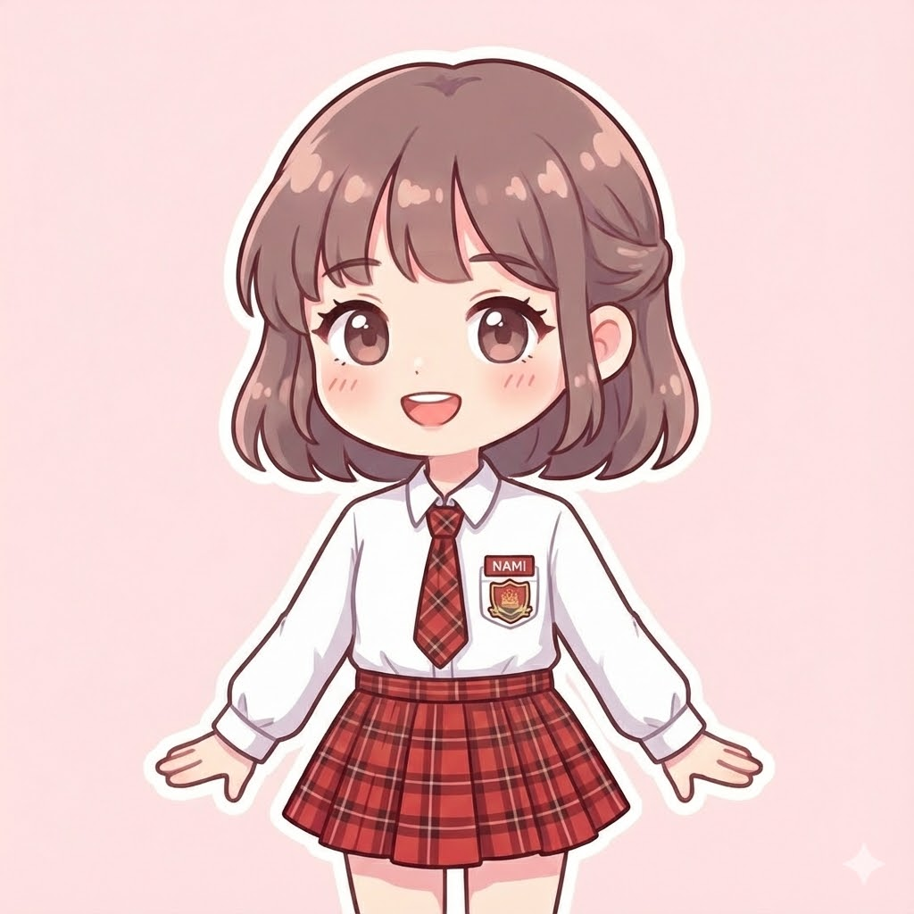

|
 |
Nick name: NAMI (˶˃ ᵕ ˂˶) Tuổi: 17 ✨ Sở thích🖼️ Vẽ tranh cho phép bạn tự do sáng tạo, biến những ý tưởng trong đầu thành hiện thực trên giấy hoặc canvas. 📸 Chụp hình là cách tuyệt vời để ghi lại những khoảnh khắc, cảm xúc và vẻ đẹp của thế giới xung quanh một cách chân thực.✨ Sở trườngVẽ (Hội họa): Đây là khả năng thể hiện ý tưởng, sử dụng màu sắc, hình khối, và bố cục trên mặt phẳng. Bạn có thể giỏi vẽ tay, vẽ kỹ thuật số, hay cả hai. Trang trí (Thiết kế/Decoration): Đây là khả năng sắp xếp, phối hợp các yếu tố (vật liệu, màu sắc, ánh sáng, đồ vật) để tạo ra không gian đẹp mắt, hài hòa và có ý nghĩa. Nó có thể áp dụng trong trang trí nội thất, sự kiện, thời trang, hoặc thậm chí là trang trí món ăn.Ưóc mơƯớc mơ của tôi là trở thành chủ một tiệm cà phê. Đó không chỉ là một kế hoạch kinh doanh, mà là việc xây dựng một không gian yên bình và ấm áp giữa lòng thành phố hối hả. Tôi hình dung quán cà phê của mình sẽ có thiết kế mộc mạc, với ánh đèn vàng dịu nhẹ, những chiếc ghế sofa êm ái, và những chậu cây xanh nhỏ xinh. Không gian sẽ luôn thoang thoảng mùi cà phê rang xay và tiếng nhạc jazz du dương.✨ Dự định tương laiHọc hỏi chuyên môn: Tôi sẽ tham gia các khóa học pha chế barista, tìm hiểu sâu về quản lý kinh doanh và kỹ năng dịch vụ khách hàng. Lập kế hoạch tài chính: Tôi cần tính toán kỹ lưỡng về chi phí mặt bằng, trang thiết bị và vận hành ban đầu. Xây dựng thương hiệu: Tôi sẽ thiết kế một concept độc đáo cho quán, từ tên gọi, logo cho đến menu, để tạo ra sự khác biệt. |
| Phim yêu thích |